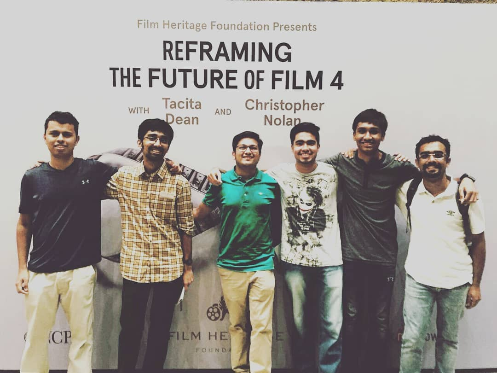
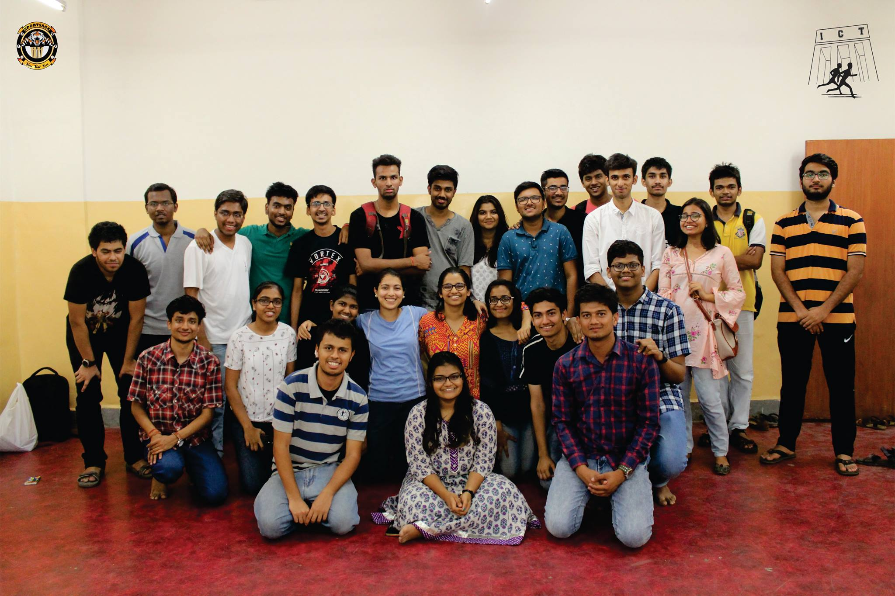

About Me
An engineer by profession, I'm highly passionate about soccer,movies and travelling the world.
I look up to Christopher Nolan, Cristiano Ronaldo, Andrew Carnegie and Charles Darwin.
Nolan teaches me that fantasy has no limits!Ronaldo teaches me to never give up!
Carnegie teaches me the importance of having a
community! Darwin teaches me that evolution is the key to progress
Highlights
While in Austria

Watching Christopher Nolan Live in Mumbai,2018

A trip to Cannes, the holy land of Cinema

Social Drive for ICT Marathon 2018, host to 4000 runners from all over the world.
Pictured here as the Overall Event Head with my co-Event Heads and Organizing Team
